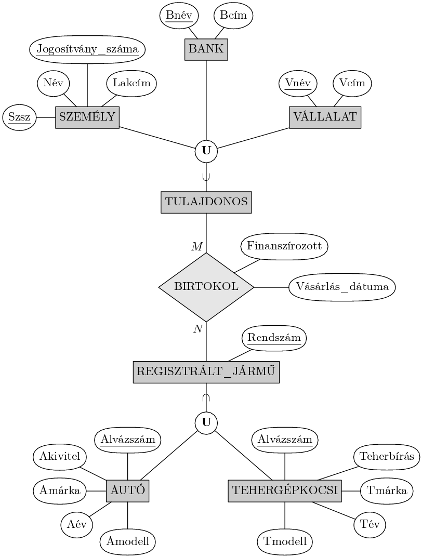

Adatbázis készítése

Ez a tárgy az adatbázis készítése alapjait tartalmazza.
Tartalom
- Az adatbázis-kezelő feladata
- Az adatbázis objektumai
- Adatbázis-kezelő rendszerek
- Az adattáblák kezelése
- Az adattáblák kezelése, kulcs fogalma
- Rekordok felvitele, módosítása, törlések
- Adattábla megjelenítése, formázása
- Statisztikai számítások a táblában
- Keresés: automatikus, speciális szűrés űrlap szerint
- Lekérdezések: választó, törlő, frissítő, stb.
- Adattáblák létrehozása és összekapcsolása
- Táblák feltöltése